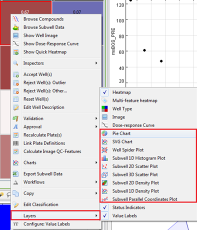
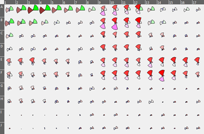
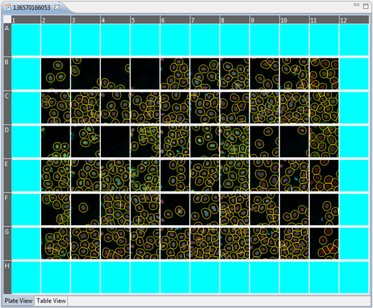

On a Heatmap, or Quick Heatmap, you have the option to show several layers. You can also use all Phaedra Chart types as a heatmap layer. This can be useful to quickly see patterns between certain wells.
To show a chart layer on a Heatmap, right-click on the Heatmap > Layers > choose a chart type.

After you have selected a Chart Layer, you will notice that on right-clicking the Heatmap again, you have an extra option to configure your Chart Layer. Selecting this new option will open a dialog where you can adjust settings for your chart.
Here is an example of a Pie Chart Layer:

Another example showing a scatterplot(bottom) and a heatmap plus histopgram Chart Layer(top)

Below is a screenshot of a heatmap with an image layer added. Any combination of Image Channels can be freely chosen. You can also choose the size of the thumbnail. This allows to use a portion from the whole image with more details, as a thumbnail representation.
